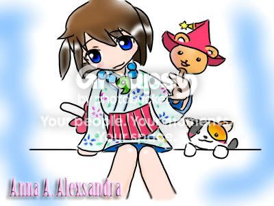

หน้า 2 จากทั้งหมด 3
Re: ผู้แต่งเองจ้า

โพสต์แล้ว:
พฤหัสฯ. 28 ก.พ. 2008 10:21 amโดย ECO
RIANBOW เขียน:Yutsuha เขียน:อ่านะฟิคฮาเร็มเจงๆด้วยสินะ เหอๆ ที่บอกว่า6คนน่ะตัวเอกนะ แต่มีตัวประกอบโผล่มาแจมเยอะ (ตัวประกอบม่ายมีคู่น่ะนะ) งั้นเราเพิ่มบทให้ละกัน ม่ายอยากให้ใครตกรอบซักคนง่ะ TT^TT~~ รับหมดแหละ อีกอย่างที่เราลืมบอก คือ
1.ชื่อเรียกง่ายๆ
2.อยากคู่กะใครเควสมา
3.ถ้าไม่อยากมีคู่อยู่เป็นเพื่อนกันก้อได้เควสโลดดดดดด
แค่นี้อ่ะจ้า
ป.ล พวกผู้ชายหายปายหนายกันหมดเนี่ยยยยย เด๋วกลายเป็นฟิคเลส ก้อซวยอีก
คำถามของนู๋คือ
1.เควส = pm ใช่ไหม?
2.ขอในนี้ได้ไหม
ตอบๆ
1.โพสไว้ก้อได้
2.ได้
รับสมัครตัวละครชายจ้า ขาดหลายตำแหน่งมากมายเรยยยย
Re: Fic Eco Fantasy [รับสมัครตัวละคร]
โพสต์แล้ว:
พฤหัสฯ. 28 ก.พ. 2008 1:56 pmโดย ECO
xiahjunsu เขียน:กลุ่มนี้มี6คนนะคะ รับสมัคร6คนเน่อ
แบบฟอร์ม
ชื่อ: RaFaEaLs
เลเวล: 57/25
เพศ: ชายคับ
เผ่าพันธุ์: Titania
อาชีพ: Druid
นิสัย: เป็นคนมีน้ำใจชอบช่วยเหลือผูอื่นอยู่เสมอ เป็นคนที่ร่าเริงแจ่ใส แต่จริงๆภายในเก็บความเศร้าไว้ตลอดเวลา
อาวุธ: คฑาแห่งแสง
สิ่งที่ใฝ่ฝัน: อยากเป็น Druid ที่ช่วยเหลือ ทุกๆคน และเป็น Druid ที่เก่งที่สุด เพื่อกำจัด ความมืดที่ชั่วร้าย
ชอบ: แมว
เกลียด: คนที่ทำร้ายผู้อื่น ที่ไม่มีทางสู้
ประวัติ: เป็นเทพที่เป็นลูกของเสนาบดีชั้นผู้ใหญ่แห่งแดน สวรรค์ จึงได้เป็นเพื่อนกับเจ้าชายด้วย แต่การเป็นเพื่อนกับเจ้าชายนั้นเหมือนเป็นคนรับใช้มากกว่า เพราะว่าเจ้าชายใช้อำนาจกดดันอยู่เสมอ วันหนึ่งเจ้าชายเกิดปิ๊งกับน้องสาวของเราเข้าจึงให้เราช่วย แต่พอเจ้าชายแต่งงานกับน้องสาวเราแล้ว ก็ไม่เคยสนใจน้องสาวเราอีกเลย แล้วยังสั่งเนรเทศครอบครัวของเราไปยัง Aronia Land ทำให้ตอนนี้รู้สึกเครียดแค้นเจ้าชายเป็นอันมาก
อื่นๆเพิ่มเติม: ปัจจุบันยังไม่รู้เลยว่าน้องสาว ยังอยู่สบายดีอยู่ไหม จึงออกเดินมาง เพื่อตามหาหนทางกลับสู่สวรรค์เพื่อช่วยน้องสาวกลับมา ระหว่างทาง ได้พบกับเพื่อนทั้ง 5 คน และได้ปิ๊งเพื่อนสาวคนหนึ่งในกลุ่ม
ขอคู่กะ Amethyst นะคับ
เหมือนใน ฟิค เราอิๆ
โพสต์แล้ว:
พฤหัสฯ. 28 ก.พ. 2008 7:33 pmโดย ECO
คู่กะ แอนจัง ได้มิ? ต้องให้เจ้าตัวมาตอบด้วย =w= เมี้ยว
โพสต์แล้ว:
พฤหัสฯ. 28 ก.พ. 2008 7:43 pmโดย ECO
ได้จ้ามิมิ
กลุ่ม xiahjunsu เค้ากลุ่ม Fic
เรากลุ่มนักวาดการ์ตูนมั่งอุอุ
โพสต์แล้ว:
พฤหัสฯ. 28 ก.พ. 2008 7:53 pmโดย ECO
อืม
ขอคู่กับ Amethyst(เป็นรุ่นพี่ล่ะกันนะ)
เเล้วก็ขอคู่กับคนที่เคยช่วยวินดี้ตอนเด็กๆได้มิ
เเต่ของ Amethyst ต้องถามเจ้าตัวก่อน
โพสต์แล้ว:
พฤหัสฯ. 28 ก.พ. 2008 8:08 pmโดย ECO
ขออยู่บนคานล่ะกันใครจะมาคู่ก็ได้ตามสบาย
โพสต์แล้ว:
พฤหัสฯ. 28 ก.พ. 2008 8:18 pmโดย ECO
สรุปคือ
1.RaFaEaLs + Amethyst
2.Hitaka + Anna
3.Sobajung + Fence
3.Yokyookk + Ansir
ทุกคนอยู่คนละกลุ่มนะ
กลุ่มแรก
1.RaFaEaLs
2.Anna
3.Fence
4.Ansir
5.มาโกะ
6.GinnySypia
กลุ่ม2
1.Amethyst
2.Hitaka
3.Sobajung
4.Yokyookk
5.Windy
รวมคนแต่งไปเป็นลูกแมวถือของกินวิ่งตามหลังละกันนะ แหะๆ ติดตามดูสถานการณ์ไง ว่าจะเป็นยังไงต่อไป อ่ะนะ จาเอามาลงเร็วๆนี้แหละจ้า ติดตามอ่านกันด้วยน้าคะ
โพสต์แล้ว:
พฤหัสฯ. 28 ก.พ. 2008 8:31 pmโดย ECO
อยู่คนละกลุ่มแล้วจาเจอกานยังไงอ่ะคับ งง
โพสต์แล้ว:
พฤหัสฯ. 28 ก.พ. 2008 8:43 pmโดย ECO
ก้อมันคือพรหมลิขิตไง (งั้นชั้นก้อเปนพระเจ้าอ่ะดิเนอะ เหอะๆ) ป่าวหรอก เหมือนกับว่า บังเอิญเจอกันไงแล้วก้อเจอกันบ่อยเพราะส่วนใหญ่มีเป้าหมายเดียวกัน อ่ะค่ะ
ยังไงก้อเจอกันอยู่ดีแหละนะ
ป.ล สุดท้ายก้อ......ติดตามกันดูนะ
โพสต์แล้ว:
พฤหัสฯ. 28 ก.พ. 2008 8:43 pmโดย ECO
ไม่มีไรทำวาดเล่นๆ
ใช้เวลา 1 ชม. งิงิ
วิจารณ์หน่อยงิ

โพสต์แล้ว:
พฤหัสฯ. 28 ก.พ. 2008 8:49 pmโดย ECO
น่ารักดีค่ะ เอ่อเอางี้นะ
ถ้าสงสัยอาไร แอดมาคุยกันได้ที่
lalitear@hotmail.com นะคะออนทุกคืน
โพสต์แล้ว:
พฤหัสฯ. 28 ก.พ. 2008 8:53 pmโดย ECO
^
^
^
ทามไมทุกคืนงะ - - เป็นมนุษย์หมาป่า หยอ
แง้วๆๆๆๆ
โพสต์แล้ว:
พฤหัสฯ. 28 ก.พ. 2008 8:58 pmโดย ECO
Annie เขียน:ไม่มีไรทำวาดเล่นๆ
ใช้เวลา 1 ชม. งิงิ
วิจารณ์หน่อยงิ
...
อ๊า~ น่ารักกกกก เมี้ยวว
เด๋ววาด ฮิตากะมาให้ดูนะเมี้ยว
โพสต์แล้ว:
พฤหัสฯ. 28 ก.พ. 2008 9:00 pmโดย ECO
บ้าเหรอ นกฮูกตะหาก เอ้ย!!! ไม่ช่ายยยยย เป็นลูกหมาป่าสีขาวจ้า
ที่ออนทุกคืนเพราะกลางวันเล่นเกมไงล่ะ
โพสต์แล้ว:
พฤหัสฯ. 28 ก.พ. 2008 9:25 pmโดย ECO

ภาพวาดอย่างชุ่ย 5 นาทีเสร็จ (ไม่ได้ตั้งใจเพราะว่าตัวเป็นขนอยู่ ตอนนี้ อิอิ)
ปล. ฮิตากะเนี่ยบางครั้งจะตาโตนะ เพราะว่าเก๊กหายไป อิอิ